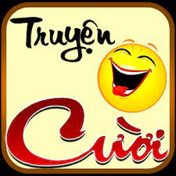

Có ba chú Mỹ, Pháp, Việt nam đi chơi trên tàu, bị đắm, dạt vào hoang đảo. Một vị thần hiện lên, bảo: “Ta cho mỗi người một điều ước”.
Chú Mỹ bảo: “Con ước gì được về lại Mỹ.” Thế là chú ta về lại Mỹ, lái xe vèo vèo ở New York.
Chú Pháp bảo: “Con ước gì được về lại Pháp.” Thế là chú ta lại về Pháp, thấy mình đang loăng quăng ngắm gái ở chân tháp Eiffel.
Chú Việt nam bảo: “Ước gì hai thằng kia quay trở lại đây với con.”
Thế là cả ba chú lại cùng ngồi méo mặt trên hoang đảo.
Chú Mỹ bảo: “Con ước gì được về lại Mỹ.” Thế là chú ta về lại Mỹ, lái xe vèo vèo ở New York.
Chú Pháp bảo: “Con ước gì được về lại Pháp.” Thế là chú ta lại về Pháp, thấy mình đang loăng quăng ngắm gái ở chân tháp Eiffel.
Chú Việt nam bảo: “Ước gì hai thằng kia quay trở lại đây với con.”
Thế là cả ba chú lại cùng ngồi méo mặt trên hoang đảo.
Ba vị tướng người Nhật, Mĩ và Việt Nam thi xem quân đội của ai dũng cảm nhất.
Người Mĩ nói:
Bây giờ tôi cho 1 tiểu đội lính của mình vào một căn phòng. Sau khi tôi thả 1 sợi lông chạm đất thì 1 phút sau lính của tôi sẽ tự sát hết.
Quả đúng như vậy, sau khi vị tướng người Mĩ thả sợi lông xuống đất và đi ra khỏi phòng thì nghe thấy tiếng cầu kinh của binh sĩ Mĩ và một phút sau tất cả đều tự sát hết.
Đến lượt vị tướng người Nhật nói:
Cần gì phải 1 phút. Chỉ cần sợi lông chạm đất là lính của tôi sẽ tự sát hết.Khi ông ta thả sợi lông rồi vừa bước ra khỏi phòng thì đã nghe thấy tiếng súng nổ và tất cả đều đã chết.
Đến lượt Vị tướng Việt thì ông cũng làm như vậy và ba vị tướng ngồi chờ.
Nhưng chờ đến nửa tiếng mà vẫn chưa nghe tiếng súng nên hai vị tướng kia cười chế diễu vị tướng Việt. Nhưng rồi ông cười khẩy và dẫn hai vị tướng kia vào phòng.Hai vị tướng kia há hốc mồm kinh ngạc vì tất cả anh lính cụ Hồ đều đang nằm dưới sàn nhà…. thổi lông gà để không cho nó chạm đất.
Người Mĩ nói:
Bây giờ tôi cho 1 tiểu đội lính của mình vào một căn phòng. Sau khi tôi thả 1 sợi lông chạm đất thì 1 phút sau lính của tôi sẽ tự sát hết.
Quả đúng như vậy, sau khi vị tướng người Mĩ thả sợi lông xuống đất và đi ra khỏi phòng thì nghe thấy tiếng cầu kinh của binh sĩ Mĩ và một phút sau tất cả đều tự sát hết.
Đến lượt vị tướng người Nhật nói:
Cần gì phải 1 phút. Chỉ cần sợi lông chạm đất là lính của tôi sẽ tự sát hết.Khi ông ta thả sợi lông rồi vừa bước ra khỏi phòng thì đã nghe thấy tiếng súng nổ và tất cả đều đã chết.
Đến lượt Vị tướng Việt thì ông cũng làm như vậy và ba vị tướng ngồi chờ.
Nhưng chờ đến nửa tiếng mà vẫn chưa nghe tiếng súng nên hai vị tướng kia cười chế diễu vị tướng Việt. Nhưng rồi ông cười khẩy và dẫn hai vị tướng kia vào phòng.Hai vị tướng kia há hốc mồm kinh ngạc vì tất cả anh lính cụ Hồ đều đang nằm dưới sàn nhà…. thổi lông gà để không cho nó chạm đất.
Trong hội thi Ðỉnh cao Khoa học Kỹ thuật Thế giới, các cường quốc trên thế giới đang đưa ra những bằng chứng để chứng tỏ mình có trình độ khoa học cao nhất:
Ðại diện của Nhật đứng lên phát biểu: “Chúng tôi vừa mới hoàn thiện một loại tàu vũ trụ mới không người lái, dùng để thám hiểm sao Hoả.
Tính năng tác dụng của tàu này thì nhiều vô kể, nhưng nổi bật nhất là nó có khả năng bay sát bề mặt Sao hoả.”
Ban giám khảo nhao nhao phản đối: “Phét, làm sao có thể bay sát được. Bề mặt sao Hoả rất gồ ghề.”
Ðại diện của Nhật cắt lời: “Tất nhiên. Chúng tôi phải có một sai số khoảng 20cm”
Ðến lượt đại diện của Mỹ: “Chúng tôi cũng vừa chế tạo ra tàu ngầm loại mới, có thể lặn sâu và đi sát lòng biển.”
Ban giám khảo cũng không tin: “Làm sao đi sát được? Bề mặt của đáy biển cũng rất lồi lõm.”
“Phải, cũng như Nhật Bản, tàu của chúng tôi có sai số là 20cm”
Bỗng đại diện Việt Nam lên tiếng: “Nếu như vậy, nước tôi vừa phát kiến ra phương pháp đẻ bằng rốn.”
Cả ban giám khảo, đại diện Nhật, đại diện Mỹ đều phản đối: “Không thể có chuyện ấy được!?!”
Ðại diện Việt Nam bình thản nói: “Dĩ nhiên, chúng tôi cũng có tính tới sai số là 20cm.”
Ðại diện của Nhật đứng lên phát biểu: “Chúng tôi vừa mới hoàn thiện một loại tàu vũ trụ mới không người lái, dùng để thám hiểm sao Hoả.
Tính năng tác dụng của tàu này thì nhiều vô kể, nhưng nổi bật nhất là nó có khả năng bay sát bề mặt Sao hoả.”
Ban giám khảo nhao nhao phản đối: “Phét, làm sao có thể bay sát được. Bề mặt sao Hoả rất gồ ghề.”
Ðại diện của Nhật cắt lời: “Tất nhiên. Chúng tôi phải có một sai số khoảng 20cm”
Ðến lượt đại diện của Mỹ: “Chúng tôi cũng vừa chế tạo ra tàu ngầm loại mới, có thể lặn sâu và đi sát lòng biển.”
Ban giám khảo cũng không tin: “Làm sao đi sát được? Bề mặt của đáy biển cũng rất lồi lõm.”
“Phải, cũng như Nhật Bản, tàu của chúng tôi có sai số là 20cm”
Bỗng đại diện Việt Nam lên tiếng: “Nếu như vậy, nước tôi vừa phát kiến ra phương pháp đẻ bằng rốn.”
Cả ban giám khảo, đại diện Nhật, đại diện Mỹ đều phản đối: “Không thể có chuyện ấy được!?!”
Ðại diện Việt Nam bình thản nói: “Dĩ nhiên, chúng tôi cũng có tính tới sai số là 20cm.”
Năm 2010 có 1 đoàn tàu xuyên quốc gia đi qua tất cả các nước trên thế giới.Trên tàu có 1 ông giáo sư bảo rằng cứ đi qua đất nước nào ông ta không cần nhìn cũng biết. Mọi người không tin bèn bảo ông ta làm thử. Ông ta thò tay ra ngoài cửa sổ đoàn tàu:
“- Ở đây nóng quá! Chắc là California Mỹ rồi”. Một lúc sau ông ta lại thò tay ra ngoài và bảo:
“- Chà! Lạnh thật! Đến Matxcova rồi!!” Đúng 2h sau ông ta thò tay ra cửa sổ rồi rụt vào nói:
“- Đúng đây là Việt Nam rồi” Mọi người hỏi sao ông biết giáo sư nói:
“Mất cái đồng hồ đeo tay.”
“- Ở đây nóng quá! Chắc là California Mỹ rồi”. Một lúc sau ông ta lại thò tay ra ngoài và bảo:
“- Chà! Lạnh thật! Đến Matxcova rồi!!” Đúng 2h sau ông ta thò tay ra cửa sổ rồi rụt vào nói:
“- Đúng đây là Việt Nam rồi” Mọi người hỏi sao ông biết giáo sư nói:
“Mất cái đồng hồ đeo tay.”
Xe đang trên đường ra sân bay, người khách Nhật Bản nhìn thấy một chiếc xe vọt qua, ông ta thích thú thốt lên:
- Ooh… TOYOTA! Made in Japan! Very fast! Một lúc sau lại có một chiếc xe khác phóng qua, ông khách lại reo to:
- Ooh… Nissan! Made in Japan! Very fast! Người lái xe bắt đầu cảm thấy bực mình, chưa kịp có ý kiến gì thì lại nghe thấy ông khách Nhật Bản hãnh diện reo:
- Ooh… Misubishi! Made in Japan! Very fast!… Đến sân bay, người khách xuống xe trả tiền taxi, người lái taxi nói: 200 USD
- Ooh… Very expensive (rất đắt) !!! This is a short distance! Người lái xe thản nhiên chỉ vào đồng hồ tính km và nói:
- Made in Viet Nam! Very Fast (rất nhanh)